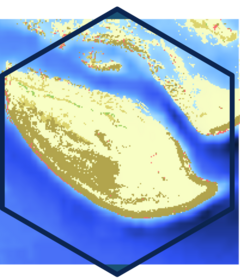

Temporal NDCI Change Classification
Source:R/compare_ndci_change.R
compare_ndci_change.RdClassifies pixel-wise NDCI change into three categories: increase in chlorophyll-a, no significant change, and decrease in chlorophyll-a.
Arguments
- ndci_change
SpatRaster. Output of
assess_reef_change().- threshold
Numeric. Minimum absolute NDCI change to be considered significant. Default is 0.1. See Details.
Details
NDCI change is classified into three classes:
Chl-a increase (NDCI change > +threshold): Indicates elevated phytoplankton biomass, potentially associated with eutrophication, algal blooms, or increased nutrient input.
No significant change (|NDCI change| <= threshold): Change within the defined threshold, interpreted as natural variability or sensor noise rather than an ecologically meaningful signal.
Chl-a decrease (NDCI change < -threshold): Indicates reduced phytoplankton biomass, potentially reflecting improved water clarity or reduced nutrient availability.
The default threshold of 0.1 is a practical convention used in exploratory NDCI change analyses when no site-specific calibration data are available. It should be treated as a starting point and adjusted based on local conditions and sensor characteristics. No universally established threshold exists in the literature; Mishra & Mishra (2012) demonstrate that NDCI can qualitatively map chlorophyll-a without in-situ data, but do not define a change threshold. For robust trend analysis across multiple time points, statistical approaches such as the Mann-Kendall trend test are recommended (European Environment Agency, 2024).
References
Mishra, S. & Mishra, D.R. (2012). Normalized difference chlorophyll index: A novel model for remote sensing of chlorophyll-a concentration in turbid productive waters. Remote Sensing of Environment, 117, 394–406. doi:10.1016/j.rse.2011.10.016
European Environment Agency (2024). Chlorophyll in Europe's transitional, coastal and marine waters. https://www.eea.europa.eu/en/analysis/indicators/chlorophyll-in-transitional-coastal-and
Examples
if (FALSE) { # \dontrun{
s2_24 <- terra::rast(system.file("extdata", "Sentinel2_2024_example.tif",
package = "ReefMappeR"))
s2_25 <- terra::rast(system.file("extdata", "Sentinel2_example.tif",
package = "ReefMappeR"))
change <- assess_reef_change(calc_ndci(s2_24), calc_ndci(s2_25))
compare_ndci_change(change)
compare_ndci_change(change, threshold = 0.05)
} # }